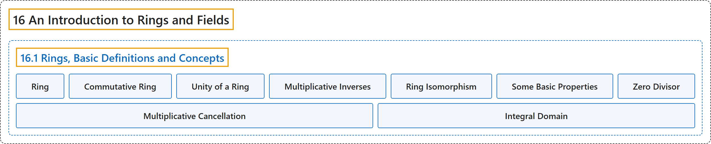

16.1 Rings, Basic Definitions and Concepts
Classification

Glossary
| Term | Definition | 中文翻译 | Source |
|---|---|---|---|
| 16.1 Rings, Basic Definitions and Concepts 环：基本定义与概念 |
(No definition) | （无定义） | Doerr & Levasseur, n.d., section 16.1 |
| Ring 环 |
"A ring is a set \(R\) together with two binary operations, addition and multiplication, denoted by the symbols \(+\) and \(\cdot\) such that the following axioms are satisfied:" | 环是带有两个二元运算（加法与乘法，分别记作符号 \(+\) 和 \(\cdot\)）的集合 \(R\)，使得下列公理成立： | Doerr & Levasseur, n.d., Definition 16.1.1 |
| Commutative Ring 交换环 |
"A ring in which multiplication is a commutative operation is called a commutative ring." | 乘法为交换运算的环称为交换环。 | Doerr & Levasseur, n.d., Definition 16.1.5 |
| Unity of a Ring 环的单位元 |
"A ring \([R; +, \cdot ]\) that has a multiplicative identity is called a ring with unity. The multiplicative identity itself is called the unity of the ring. More formally, if there exists an element \(1 \in R\text{,}\) such that for all \(x \in R\text{,}\) \(x\cdot 1 = 1\cdot x = x\text{,}\) then \(R\) is called a ring with unity." | 具有乘法单位元的环 \([R; +, \cdot ]\) 称为含幺环。该乘法单位元本身称为环的幺元。更正式地说，若存在元素 \(1 \in R\)， 使得对所有 \(x \in R\)， 有 \(x\cdot 1 = 1\cdot x = x\)， 则称 \(R\) 为含幺环。 | Doerr & Levasseur, n.d., Definition 16.1.6 |
| Multiplicative Inverses 乘法逆元 |
"Let \([R; +, \cdot ]\) be a ring with unity, 1. If \(u \in R\) and there exists an element \(v \in R\) such that \(u\cdot v = v\cdot u = 1\text{,}\) then \(u\) is said to have a multiplicative inverse, \(v\text{.}\) A ring element that possesses a multiplicative inverse is a unit of the ring. The set of all units of a ring \(R\) is denoted by \(U(R)\text{.}\)" | 设 \([R; +, \cdot ]\) 为含幺（幺元为 1）的环。若 \(u \in R\) 且存在元素 \(v \in R\) 使得 \(u\cdot v = v\cdot u = 1\)， 则称 \(u\) 有乘法逆元 \(v\)。 具有乘法逆元的环元素是环的单位。环 \(R\) 的所有单位的集合记作 \(U(R)\)。 | Doerr & Levasseur, n.d., Definition 16.1.10 |
| Ring Isomorphism 环同构 |
"Let \([R; +, \cdot ]\) and \([R'; +', \cdot']\) be rings. Then \(R\) is isomorphic to \(R'\) if and only if there exists a function, \(f:R \to R'\text{,}\) called a ring isomorphism, such that" | 设 \([R; +, \cdot ]\) 和 \([R'; +', \cdot']\) 为环。则 \(R\) 同构于 \(R'\)，当且仅当存在函数 \(f:R \to R'\)， 称为环同构，使得 | Doerr & Levasseur, n.d., Definition 16.1.13 |
| Some Basic Properties 一些基本性质 |
"Let \([R; +, \cdot]\) be a ring, with \(a, b \in R\). Then \(\displaystyle a \cdot 0 = 0 \cdot a = 0\) \(\displaystyle a\cdot (-b) = (-a) \cdot b = -(a\cdot b)\) \(\displaystyle (-a) \cdot (-b) = a\cdot b\)" | 设 \([R; +, \cdot]\) 是环，\(a, b \in R\)。则 \(\displaystyle a \cdot 0 = 0 \cdot a = 0\) \(\displaystyle a\cdot (-b) = (-a) \cdot b = -(a\cdot b)\) \(\displaystyle (-a) \cdot (-b) = a\cdot b\) | Doerr & Levasseur, n.d., Theorem 16.1.18 |
| Zero Divisor 零因子 |
"Let \([R; +, \cdot ]\) be a ring. If \(a\) and \(b\) are two nonzero elements of \(R\) such that \(a \cdot b = 0\text{,}\) then \(a\) and \(b\) are called zero divisors." | 设 \([R; +, \cdot ]\) 为环。若 \(a\) 和 \(b\) 是 \(R\) 的两个满足 \(a \cdot b = 0\)， 的非零元素，则称 \(a\) 和 \(b\) 为零因子。 | Doerr & Levasseur, n.d., Definition 16.1.20 |
| Multiplicative Cancellation 乘法消去律 |
"The multiplicative cancellation laws hold in a ring \([R; +, \cdot ]\) if and only if \(R\) has no zero divisors." | 环 \([R; +, \cdot ]\) 中乘法消去律成立，当且仅当 \(R\) 没有零因子。 | Doerr & Levasseur, n.d., Theorem 16.1.22 |
| Integral Domain 整环 |
"A commutative ring with unity containing no zero divisors is called an integral domain." | 不含零因子的含幺交换环称为整环。 | Doerr & Levasseur, n.d., Definition 16.1.23 |
References
Doerr, A., & Levasseur, K. (n.d.). Applied discrete structures. Retrieved October 28, 2026, from https://discretemath.org/ads/index-ads.html